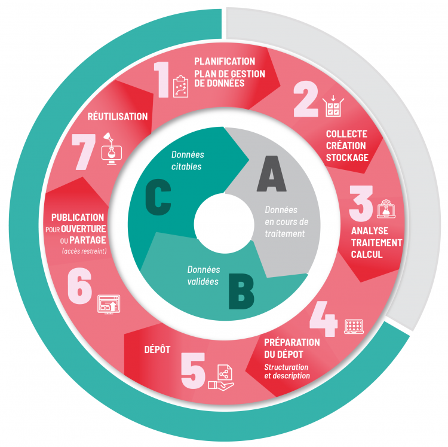
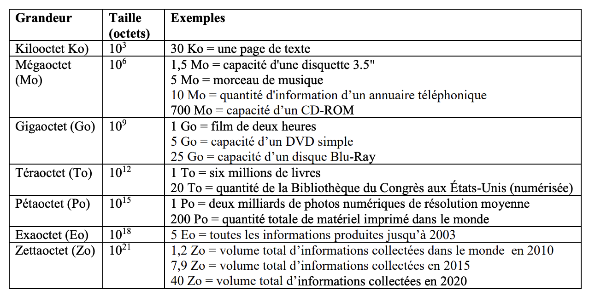
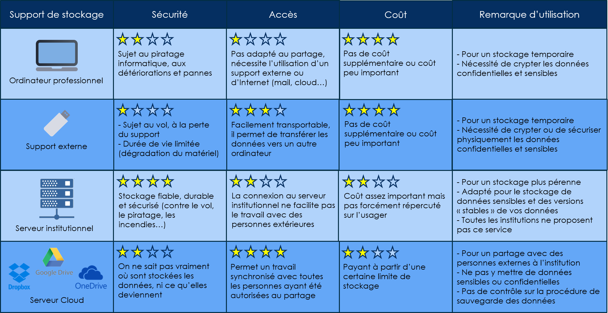
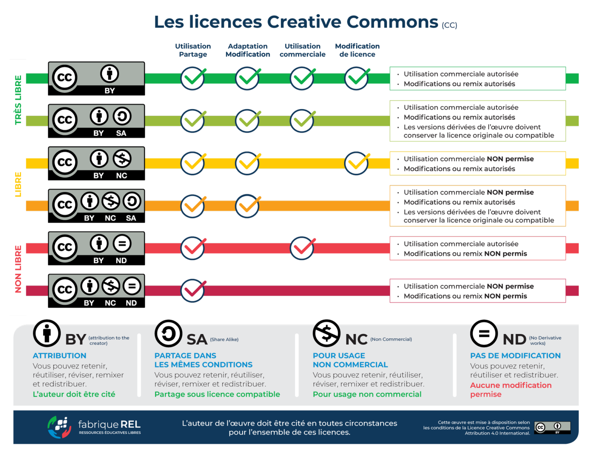

Éléments introductifs sur les données
1. Les données de la recherche : définitions, typologies, usages
1.1. Qu’est-ce qu’une donnée (ou “donnée de la recherche”) ? Plusieurs définitions :
Selon l’OECD (2007) : “enregistrements factuels (chiffres, textes, images et sons), qui sont utilisés comme sources principales pour la recherche scientifique et sont généralement reconnus par la communauté scientifique comme nécessaires pour valider des résultats de recherche”.
Selon Rivet et al. (2018) : “les données de la recherche concernent à la fois des échantillons, les données administratives et les données scientifiques tant manuscrites (cahiers de laboratoire…) que numériques”.
Selon l’ARDC (2023) : “means data in the form of facts, observations, images, computer program results, recordings, measurements or experiences on which an argument, theory, test or hypothesis, or other research output is based. It relates to data generated, collected, or used during research projects, and in some cases may include the research output itself. Data may be numerical, descriptive, visual or tactile. It may be raw, cleaned or processed, and may be held in any format or media. Research data, in many disciplines, may by necessity include the software, algorithm, model and/or parameters, used to arrive at the research outcome, in addition to the raw data that the software, algorithm or model is applied to”.
Voici quelques exemples de types de données utilisés en science ouverte [Données de la Recherche - 1. Introduction | ENPC]. :
Données d’observation : Les données d’observation sont recueillies en observant des phénomènes ou des comportements sans les influencer. Elles sont souvent collectées dans des environnements naturels ou en situation réelle, sans intervention directe du chercheur. Ces données peuvent inclure des observations de phénomènes ou de comportements, ou par exemple de relevés environnementaux (température, les précipitations, ou des images de télédétection), .
Données expérimentales : Il s’agit des résultats obtenus lors d’expériences en laboratoire, comme les mesures de réactions chimiques ou l’observation de comportements biologiques. Ce type de données est généralement collecté dans un cadre contrôlé, où le chercheur peut manipuler les variables et mesurer les résultats.
Données d’enquêtes : Les données d’enquête sont recueillies en interrogeant des personnes ou des groupes de personnes sur leurs opinions, leurs attitudes ou leurs comportements. Ces données sont généralement collectées via des questionnaires, des interviews ou des sondages. Elles permettent de comprendre les attitudes, opinions ou comportements des participants.
Données qualitatives : Elles comprennent des descriptions narratives, des transcriptions d’entretiens, des notes de terrain, ou des analyses de contenu. Ces données aident à explorer les aspects plus nuancés et détaillés d’un sujet d’étude.
Données quantitatives : Ces données sont numériques qui peuvent être mesurées et analysées statistiquement. Elles permettent de quantifier des phénomènes ou des comportements et de faire des comparaisons entre différents groupes ou conditions.
Ces données peuvent être classées “primaires” ou “secondaires” :
Données primaires (ou brutes) : enregistrements factuels (chiffres, textes, images et sons), sources principales pour la recherche scientifique, reconnus comme nécessaires pour valider des résultats de recherche (OECD 2007). Informations collectées directement par le chercheur pour la première fois, spécifiquement dans le but de répondre à une question de recherche. Ces données n’ont pas été modifiées ou traitées depuis leur collecte. Elles sont originales.
Données secondaires, dérivées : informations qui ont déjà été collectées et enregistrées par une personne autre que l’utilisateur dans un but qui ne concerne pas le problème de sa recherche actuelle. Elles impliquent des informations de seconde main, elles peuvent être quantitatives ou qualitatives et sont généralement disponibles sous une forme raffinée. Elles peuvent inclure des analyses, des résumés ou des traitements supplémentaires des données primaires pour soutenir de nouvelles recherches ou conclusions.
Données d’intérêt : réutilisables afin d’améliorer les connaissances par l’enrichissement, la combinaison à d’autres jeux de données. Ce sont des données qui se réfèrent à des informations pertinentes ou bénéfiques pour un domaine d’étude particulier.
1.2. Ne pas confondre “Jeu de données” (Dataset) et “Base de données” (Database)
Tableau - Différences entre Dataset et Database (Dedieu and Fily Marie-Françoise 2015)
| Jeu de données (Dataset) | Base de données (Database) | |
|---|---|---|
| Définition | Collection d’informations organisées de manière structurée, souvent sous forme de tableaux. Ce regroupement est conçu pour faciliter l’analyse des données. Un jeu de données peut représenter une portion d’une base de données plus vaste, ou bien constituer une unité complète de données dédiée à un sujet spécifique ou à une analyse particulière. | Collection structurée de jeux de données. Elle est conçue pour stocker, organiser, et gérer de grandes quantités d’informations de manière efficace. Grâce à des systèmes de gestion de bases de données, elle permet l’accès facile aux données, ainsi que leur modification et gestion. Une base de données peut contenir plusieurs jeux de données différents et est généralement utilisée pour le stockage de données à long terme et pour des opérations complexes de traitement de données. |
1.3. Connaître et comprendre le “cycle de vie” des données :
Le “cycle de vie” des données est souvent représenté comme suit (OECD 2007) :

Connaître et comprendre le “cycle de vie des données” est essentiel pour plusieurs raisons :
Planification de la recherche : Une bonne compréhension du cycle de vie des données aide à organiser efficacement les différentes phases de gestion des données, depuis la préparation et la collecte jusqu’à leur utilisation et conservation, assurant ainsi une base solide pour le projet de recherche (UPSaclay 2023).
Accès et préservation : En suivant les étapes du cycle de vie, on s’assure que les données restent accessibles et utilisables par d’autres chercheurs, ce qui renforce la transparence et la possibilité de reproduire les résultats. Cela contribue également à la préservation sécurisée et pérenne des données. (Université Grenoble Alpes 2024).
Valorisation des données : Il aide à maximiser la valorisation des données en favorisant leur réutilisation dans d’autres contextes de recherche, ce qui peut conduire à de nouvelles découvertes ou innovations (Batifol et al. 2021).
Respect des normes et des principes éthiques : Une bonne compréhension du cycle de vie des données permet de respecter les normes réglementaires et éthiques, y compris les principes FAIR (facilement trouvables, accessibles, interopérables, réutilisables), essentiels pour la gestion des données de recherche
Minimisation des impacts environnementaux : En anticipant les étapes du cycle de vie, on peut planifier des stratégies pour minimiser les impacts environnementaux liés à l’acquisition, au traitement et à la diffusion des données (“Impacts environnementaux de la gestion et de l’ouverture des données”, Université Paris-Saclay).
2. Traiter, Analyser et FAIRiser ses données
2.1. Les 4 principes fondamentaux de la Science Ouverte : les principes FAIR
Les principes FAIR sont des lignes directrices conçues pour améliorer la gestion et l’utilisation des données numériques par les communautés de recherche. Ils représentent des bonnes pratiques de la science ouverte (SO) et encouragent l’adoption d’une culture spécifique à adopter sur les données. Ces principes visent à garantir que les données soient préparées et conservées de manière à faciliter leur partage et leur utilité, non seulement pour la communauté scientifique, mais aussi pour d’autres secteurs. Leur philosophie peut se résumer par la maxime : “aussi ouvert que possible, mais aussi fermé que nécessaire” (EUR-Lex 2019).
Ces principes ont été formalisés pour la première fois en janvier 2014 lors de l’initiative Data FAIRport, marquant un tournant dans l’importance de ces standards pour la gestion des données de recherche (Data FAIRport). En 2016, un article fondateur publié dans Nature Scientific Data expose les principes du FAIR, soulignant leur rôle crucial dans la promotion de l’accès et de la réutilisation des données de recherche (Wilkinson et al. 2016).
| Lettres | En anglais | En français | Explication |
| F | Findable | Facile à trouver | Les données doivent être faciles à trouver tant pour les humains que pour les machines. Cela implique l’utilisation de métadonnées détaillées et bien organisées, qui décrivent les données de manière précise, et leur enregistrement dans des registres de recherche reconnus. Ces pratiques assurent que les données peuvent être rapidement localisées et utilisées correctement par ceux qui en ont besoin, facilitant ainsi la recherche et l’analyse (CCSD CNRS). |
| A | Accessible | Accessible | Après avoir localisé les données, il est crucial qu’elles soient accessibles via des protocoles transparents et ouverts. Ces protocoles doivent assurer que l’accès aux données reste possible, même quand celles-ci ne sont plus actibement gérées. Cela signifie que les données doivent être stockées de manière à ce que, indépendamment de leur maintenance active, elles restent disponibles pour consultation ou utilisation future (Université de Genève). |
| I | Interoperable | Interopérable | Les données doivent être stockées dans des formats qui facilitent leur intégration avec d’autres ensembles de données. Ce choix de formats assure l’interopérabilité, permettant ainsi aux différents systèmes informatiques de travailler ensemble de manière efficace. En pratique, cela signifie que les données peuvent être combinées ou comparées avec d’autres données de manière simple, ce qui est crucial pour les analyses complexes et multidisciplinaires (Institut Pasteur). |
| R | Re-usable | Réutilisable | Les données doivent être documentées de manière exhaustive afin de faciliter leur réutilisation dans de futurs projets de recherche. Cela inclut non seulement une description détaillée des données elles-mêmes, mais aussi des informations claires sur les conditions d’utilisation et les licences associées. Une documentation complète permet à d’autres chercheurs de comprendre rapidement comment les données ont été collectées et comment elles peuvent être légalement utilisées, assurant ainsi une transition fluide et éthique vers de nouvelles recherches. |
Ces bonnes pratiques concernent principalement :
- Les formats : Un format peut soit être “propriétaire”, soit “libre” (ou “ouvert”, “pérenne”). En SO, il est recommandé d’utiliser des formats de données libres, pour la documentation et le partage des données. Ces formats sont privilégiés car ils ne dépendent pas de logiciels spécifiques qui pourraient devenir obsolètes, ce qui assure leur accessibilité et leur utilité à long terme. Bien que les formats propriétaires ne soient pas interdits, ils ne s’alignent pas pleinement sur les principes FAIR, car ils peuvent limiter l’accès et la réutilisation des données. Si un format libre n’est pas disponible, le dépôt des données dans un format propriétaire est toujours possible, mais l’accessibilité sera plus restreinte. Utiliser des formats libres favorise l’interopérabilité et la réutilisation des données, conformément aux principes FAIR, et nécessite une réévaluation régulière des solutions de sauvegarde et de stockage pour s’assrer que les données restent accessibles et surveillées.
Tableau 1. “Liste indicative de formats ouverts et fermés” (fiche syntétique sur doranum.fr - 2017)
| Type de fichier | Format ouvert | Format fermé |
|---|---|---|
| Traitement de texte | ABW (Abiword) DOCX (Document Office Open XML) ODT (OpenDocument Text) RTF (Rich Text Format) TXT (Text) |
DOC (Microsoft Word) PAGES WP (WordPerfect) |
| Image | BMP (Windows BitMaP) GIF (Graphics Interchange Format) JPG (Joint Photographic Expert Group) PNG (Portable Network Graphics) |
JP2 (Joint Photographic Expert Group 2000) TIF (Tagged Image File Format) |
| Tableur | XLSX (Tableur Office Open XML) CSV (Comma-separated values) ODS (OpenDocument SpreadSheet) TSV (Tab Seperated Values) |
XLS (Microsoft Excel) NUMBERS |
| Retouche d’image | ORA (OpenRaster) XCF (eXperimental Computing Facility) |
CPT (Corel Photo-Paint) PFI (PhotoFiltre) PSD (PhotoShop Document) |
| Vidéo | MKV (Matroska) NUT OGM (OGG Media) |
AVI (Audio Video Interleave) FLV (Flash Video) MOV (QuickTime Movie) MP4 (MPEG-4 Part 14) QT (QuickTime Movie) RM (Real Media) WMV (Windows Media Video) |
| Audio | FLAC MPC (Musepack) OGG OPUS (Opus Interactive Audio Codec) WAV (Windows Media Audio) |
AAC (Advanced Audio Coding) MP3 (MPEG-1/2_Audio_Laye_III) RAM (Real Audio Metadata) WMA (Windows Media Audio) |
| Présentation | ODP (OpenDocument Presentation) PPTX (Presentation Office Open XML) |
KEY (Keynote) PPT (Microsoft PowerPoint) |
| Archivage - Compression | 7z (Seven Zip) TAR (Tape ARchiver) ZIP |
ACE RAR (Roshal ARchive) |
| Dessin vectoriel | EPS (Encapsulated PostScript) ODG (OpenDocument Graphics) SVG (Scalable Vector Graphics) |
AI (Adobe Illustrator Artwork) CDR (CoreIDRAW) FH (Adobe FreeHand) |
| Langage de description de pages | XPS (XML Paper Specification) PS (PostScript) PDF (Portable Document Format) CSS (Cascading Style Sheets) HTML (HyperText Markup Language) XHTML (Extensible Hypertext Markup Language) |
Les identifiants : c’est un code unique associé à une personne ou à un objet. Un identifiant unique est essentiel pour le fonctionnement du “web sémantique”, qui permet de référencer et de connecter une personne ou un objet à travers l’ensemble du réseau internet. Il existe deux types d’identifiants principaux :
L’identifiant objet : utilisé pour les productions scientifiques telles que les publications et les données de recherche ;
L’identifiant contributeur : destiné aux auteurs et aux institutions.
Un identifiant efficace doit être pérenne, c’est-à-dire qu’il reste valide et reconnaissable sur le long terme grâce à des mécanismes informatiques dédiés. Par exemple, pour éviter la confusion due aux homonymes sur Google Scholar par exemple, un identifiant unique et pérenne permet d’identifier précisément une personne. Ainsi, l’identifiant joue un rôle clé dans le principe FAIR “Findable” (facilement trouvable), assurant que les informations sont facilement localisables et distinguables sur internet.
- Le Web Sémantique
-
Le Web sémantique utilise des métadonnées et des langages spécifiques développés par le World Wide Web Consortium (W3C) pour enrichir le contenu web. Ces métadonnées permettent de décrire explicitement la sémantique ou le sens des informations, facilitant ainsi leur recherche, leur interconnexion et leur réutilisation par des applications informatiques. Ainsi, il relie les données entre elles, crée des réseaux, de manière à ce qu’elles puissent être facilement interconnectées et consultées à travers différentes sources. Ces connexions sont effectuées à l’aide de métadonnées qui décrivent le contenu et la relation entre les données. Il encourage l’utilisation de formats de données et de protocoles d’échange standardisés, comme le Resource Description Framework (RDF), pour assurer la cohérence et l’interopérabilité des données sur le Web (optimize360.fr ; ionos.fr).
- De l’importance d’un identifiant ORCID pour un chercheur (identifiant contributeur)
-
ORCID est un code international, unique, gratuit et pérenne attribué à chaque chercheur pour améliorer la gestion des informations personnelles et professionnelles. Ce système soutient la transparence et la collaboration en science ouverte, et renforce la fiabilité de l’attribution des travaux académiques ( Deboin (2015) ; (universitédangers2024?)). Voici quelques-uns des principaux avantages d’ORCID :
Identification unique : ORCID attribue à chaque chercheur un identifiant numérique qui le distingue des autres, réduisant ainsi les confusions causes par des homonymes ou des variations dans l’enregistrement des noms.
Facilitation de la collaboration : ORCID offre un moyen simple pour les chercheurs de s’identifier et de se connecter avec d’autres spécialistes dans leur domaine, favorisant ainsi les échanges et les collaborations scientifiques.
Gestion des données de recherche : En science ouverte, où le partage des données est crucial, ORCID aide à organiser et à attribuer correctement les données de recherche aux bons auteurs. Cela simplifie la gestion des droits et la reconnaissance des contributions.
Intégration avec les systèmes d’information académiques : ORCID s’intègre avec de nombreux systèmes d’information académiques, permettant une synchronisation des informations de recherche à travers diverses plateformes et bases de données, ce qui rend la gestion des informations académiques plus efficace et moins sujette à erreur (orcid-france.fr).
- Le DOI, Digital Object Identifier (Identifiant objet)
-
Le DOI (Digital Object Identifier) est un identifiant numérique permanent utilisé principalement pour les documents publiés, tels que les articles de recherche, les chapitres de livres, les données et d’autres types de contenus académiques (ouvrirlascience.fr). En SO, le DOI joue un rôle crucial en facilitant l’accès, la réutilisation des recherches, leur traçabilité et leur intégrité sur le long terme. Voici quelques-uns des principaux avantages du DOI :
Identification standardisée et permanente : Le DOI fournit une méthode uniforme pour identifier de manière durable les objets électroniques publiés, assurant ainsi que chaque ressource numérique, comme les articles de recherche et les données, peut être localisée de manière fiable et durable.
Facilitation du référencement et de la citation : Les DOI facilitent le référencement et la citation des travaux académiques en fournissant un lien stable qui mène directement à l’objet numérique, ce qui est crucial pour l’attribution correcte et la reconnaissance académique.
Stabilité des liens : Contrairement aux URL, qui peuvent changer ou devenir obsolètes, les DOI restent constants. Cela résout le problème de l’obsolescence des liens et assure un accès continu aux ressources numériques.
Intégration avec les systèmes de gestion académique : Le système de DOI est intégré à de nombreux systèmes de gestion de l’information académique, permettant une interconnectivité et une facilité de gestion des références et des métadonnées associées à chaque ressource.
- Les métadonnées : ce sont des descriptions structurées qui cataloguent et organisent les données. Elles jouent un rôle crucial dans le web sémantique, facilitant le référencement des travaux de recherche à travers des mots, des expressions ou des phrases types qui sont eux-mêmes indexés. Au lieu de rester isolées, les données enrichies de métadonnées s’intègrent dans un réseau d’éléments similaires ou interconnectés, ce qui est vital pour leur récupération et leur visibilité dans les recherches. Une bonne structuration des métadonnées améliore le référencement et la visibilité des travaux de recherche. Pour ce faire, il existe plusieurs systèmes de métadonnées standardisés parmi lesquels choisir avant de publier une production scientifique, comme Dublin Core, DataCite Metadata Schema ou Data Documentation Initiative (DDI). Les métadonnées sont essentielles pour adhérer à plusieurs principes de gestion des données, notamment être ‘Trouvable’ (Findable), ‘Réutilisable’ (Reusable), et ‘Interopérable’ (Interoperable). Choisir le bon schéma de métadonnées permet de s’assurer que les données ne sont pas seulement accessibles mais aussi intégrables avec d’autres recherches et utilisables dans de nouveaux contextes scientifiques.
2.2. Acteurs des données
De nombreux acteurs jouent un rôle essentiel dans le domaine des données de recherche. Les chercheurs génèrent et utilisent ces données pour mener leurs études, tandis que les financeurs, tels que les agences gouvernementales ou les organisations privées, soutiennent financièrement la recherche et veillent à la bonne gestion des résultats obtenus. Les législateurs sont également impliqués, établissant les normes et régulations qui encadrent la gestion, la protection et le partage des données. De leur côté, les organismes de recherche coordonnent la production scientifique et facilitent la gestion des données. Enfin, les services d’appui à la recherche offrent une assistance nécessaire pour le stockage, l’archivage et l’accessibilité des données, garantissant ainsi leur bonne gestion tout au long de leur cycle de vie.
- Horizon Europe
-
Horizon Europe est le programme-cadre de l’Union européenne pour la recherche et l’innovation, couvrant la période de 2021 à 2027. Ce programme succède à Horizon 2020 et met un accent particulier sur la science ouverte pour stimuler l’innovation scientifique et technologique à travers l’Europe. Il met en place des financements, politiques et des pratiques qui facilitent non seulement l’accès aux publications scientifiques mais aussi le partage ouvert des données de recherche (science-ouverte.inrae.fr).
- UNESCO
-
En 2021, l’UNESCO a adopté une série de recommandations sur la science ouverte, visant à promouvoir une approche plus inclusive et collaborative de la science. Ces recommandations représentent un effort significatif pour aligner les pratiques scientifiques mondiales avec les principes de transparence, d’accessibilité et de collaboration, et ont été largement soutenues par les États membres de l’UNESCO (UNESCO 2021).
- La Plateforme Africaine de Science Ouverte (AOSP)
-
Hébergée par la Fondation nationale de la recherche (NRF) d’Afrique du Sud depuis 2020, l’AOSP vise à positionner les scientifiques et les systèmes scientifiques en Afrique à la pointe de la science ouverte à forte intensité de données. Elle s’engage dans des activités telles que l’évaluation de la capacité et de l’activité de la science ouverte, l’élaboration de cadres directeurs sur les politiques, les infrastructures et le renforcement des capacités.
- L’exemple de la Côte d’Ivoire
-
En Côte d’Ivoire, plusieurs initiatives montrent un engagement croissant vers la science ouverte, avec des politiques et des actions visant à promouvoir l’accès et le partage des connaissances scientifiques :
Symposium national sur la science ouverte 2022 : Organisé par le ministère de l’Enseignement supérieur et de la recherche scientifique (MERS) en collaboration avec l’Université virtuelle de Côte d’Ivoire (UVCI), ce symposium visait à élaborer une feuille de route consensuelle pour la science ouverte en Côte d’Ivoire. Il s’inscrit dans le cadre de la Recommandation de l’Unesco de 2021 (cio-mag.com).
Politique de Science Ouverte à l’Université Virtuelle de Côte d’Ivoire (UVCI) : L’UVCI a adopté une politique de science ouverte, abordant des notions, enjeux, et problématiques liées à l’ouverture des données de recherche. Cette politique vise à intégrer pleinement la science ouverte dans les activités académiques et de recherche (ird.fr).
Collaboration régionale et internationale : La Côte d’Ivoire participe également à des initiatives régionales telles que WACREN (le réseau de recherche et d’éducation de l’Afrique de l’Ouest et du Centre), qui promeut la science ouverte à travers des conférences et des collaborations (oacps-ri.eu).
Des ressources existent pour maîtriser, s’entraîner ou se préparer : Doranum, OPIDor, Omeka, Huma-Num… Ces plateformes jouent un rôle clé dans la promotion des pratiques de science ouverte en France, en fournissant les ressources et outils nécessaires pour une meilleure gestion des données scientifiques.
- Doranum
-
DoRANum (Données de la Recherche: Apprentissage NUMérique) est une plateforme dédiée à la formation et à la sensibilisation autour de la gestion et du partage des données de recherche. Elle offre des ressources éducatives pour aider les chercheurs à comprendre et mettre en pratique les principes de la gestion des données de recherche, y compris la rédaction de plans de gestion de données (PGD) (doranum.fr).
- OPIDor
-
OPIDoR (Outil de Pilotage Intégré pour les Données et les Outils de la Recherche) est un service qui propose des outils pour faciliter la gestion des données de recherche. Cela inclut des aides à la rédaction et à la mise en œuvre de plans de gestion de données. OPIDoR est particulièrement connu pour son outil de rédaction DMP (Data Management Plan), qui guide les chercheurs à travers le processus de planification de la gestion de leurs données, logiciels ou autres produits de recherche (dmp.opidor.fr).
2.3. Archiver : pérenniser ses données
Il est important de distinguer les termes stockage, sauvegarde et archivage, qui diffèrent principalement par la durée de préservation des données.
Le stockage se réfère à la conservation des données à court terme, généralement pour quelques mois ou années, et sert principalement à un accès rapide et régulier.
La sauvegarde, quant à elle, est envisagée pour une durée intermédiaire, souvent inférieure à 15 ans, et vise à protéger les données contre les pertes éventuelles.
L’archivage est destiné à la conservation des données sur le long terme, pour une période dépassant les 15 ans, et est utilisé pour les informations dont on ne nécessite pas un accès fréquent mais qui doivent être préservées pour des raisons légales, historiques, ou de recherche future.
A titre indicatif, un résumé des ordres de grandeur des données :
Tableau 2. “Ordres de grandeur des données” (Rivet et al. 2018)

Enfin, il est important de stocker/sauvegarde ses données sur différentes sources pour plus de sécurité. Un principe courant en Science Ouverte est la règle “3-2-1” : 3 copies, 2 supports, dont 1 déporté (bu.univ-lille.fr).
Trois copies des données : Il est recommandé de conserver trois copies distinctes de toutes les données importantes pour prévenir la perte due à des défaillances matérielles, des erreurs humaines, ou des catastrophes naturelles
Deux supports différents : Les trois copies devraient être stockées sur au moins deux types de supports différents pour minimiser le risque de défaillance simultanée. Les supports peuvent inclure des disques durs, des serveurs en réseau, des SSDs, des supports optiques, etc.
Une copie hors site : Au moins une des copies devrait être conservée hors site pour se protéger contre les risques liés à un emplacement physique, tels que les incendies, les inondations, ou les vols. Cette copie peut être stockée dans un emplacement géographiquement distinct ou sur un cloud sécurisé
Tableau 3. “Comparatif des différents supports de stockage” (Fiche Doranum)

3. La juridiction des données : ouvrir et clore les données
Plusieurs situations où le cadre juridique autour des données apparaît :
Pour des données anonymes : si les données utilisées pour la recherche sont des données anonymes (non identifiantes et ceci de manière irréversible), la réglementation sur la protection des données personnelles ne s’applique pas. Ne pas confondre “anonymisation” et pseudonymisation”.
- Anonymisation
-
Irréversible, ne permet plus la réidentification d’une personne : “nécessite que l’identification des personnes devienne impossible, que ce soit de manière directe ou indirecte” (André-Poyaud et al. 2019).
- Pseudonymisation
-
“Données à caractère personnel qui ne peuvent plus directement être attribuées à la personne concernée. Mais le recours à des informations supplémentaires, par exemple une table de correspondance, permet de réidentifier cette dernière. Dans ce cas la réglementation sur la protection des données personnelles s’applique. […] Consistent à séparer les données directement identifiantes (exemple: nom et prénom) des autres données non identifiantes (exemple, en attribuant un numéro aux personnes évitant de faire apparaître leur nom, mais en conservant une table de correspondance permettant de remonter à l’identité de la personne)” (André-Poyaud et al. 2019).
Pour des données dites “sensibles” : par exemple qui “révèlent la prétendue origine raciale ou ethnique, les opinions politiques, les convictions philosophiques ou religieuses, l’appartenance syndicale, l’orientation sexuelle, les données de santé, les données biométriques qui permettent d’identifier une personne, les données génétiques” (André-Poyaud et al. 2019).
La question, cruciale, des licences.
- Les licences en science ouverte (SO)
-
Elles jouent un rôle crucial en définissant les modalités de partage et d’utilisation des données et publications scientifiques. Un aperçu des principaux types de licences souvent utilisées dans le contexte de la science ouverte :
Les Licences Creative Commons (CC) : cf graphique ci-dessous. Concerne les articles de recherche, revues, livres, données de recherche, méthodologies ou matériaux pédagogiques.
Les Licences pour logiciels : (1) GNU General Public License (GPL) ; MIT License ; Apache License (scienceouverte.univ-grenoble-alpes.fr).
Les Licences pour bases de données : Open Database License (ODbL), permet aux utilisateurs de partager, modifier et utiliser la base de données tout en maintenant cette même liberté pour les autres (scienceouverte.univ-grenoble-alpes.fr).
Graphique - Résumé sur les licences Creatives Commons (CC) (fabriquerel.org)
